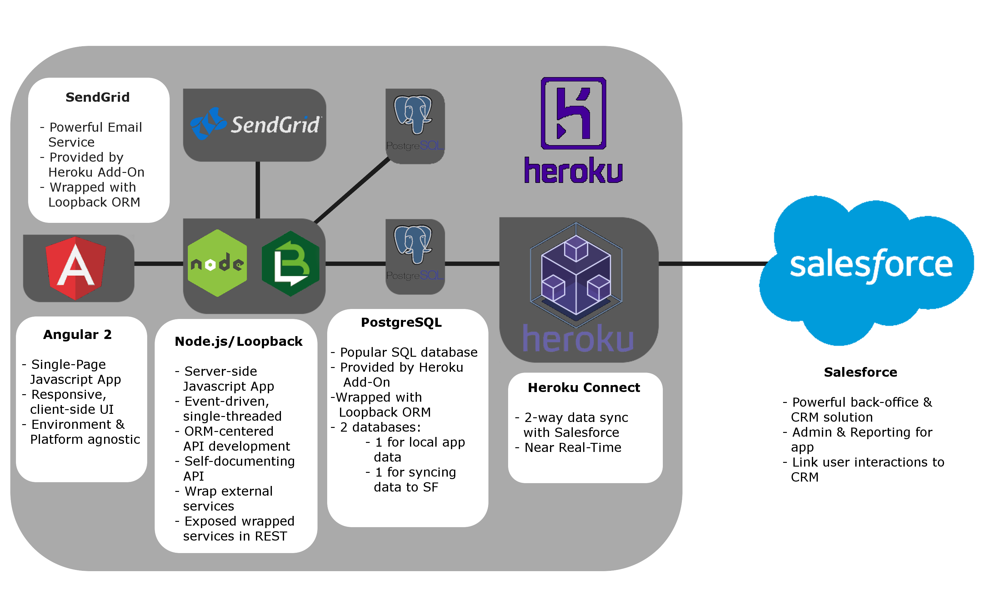

The PLAN App Accelerator is built on an evolution of the MEAN stack that we are calling the PLAN stack; named after PostgreSQL, Loopback, Angular 2, and Node. The goal of the PLAN stack is to support environment-agnostic application development for desktop, mobile, and web. Loopback provides a self-documenting core REST API that ensures uniform functionality on any device, while Angular 2 provides a responsive UI that can be bootstrapped for any environment. The stack as a whole was built with the mantra "Javascript Back-to-Front."
While searching for the correct back-end Node framework, we stumbled across Loopback and immediately took to it. Out-of-the-box it provides: ORM-centered rapid REST API development, a self-documenting REST API explorer, support for a wide range of SQL and noSQL databases, support for external email services, and even the ability to integrate external REST/SOAP APIs through the ORM.
For our front-end, we wanted to find a framework that would be able to leverage Loopback's convenient API functionality on the widest variety of platforms. We landed on Angular 2 because of its flexible bootstrapping and the way that single-page applications interact with servers lends itself to the Loopback back-end. Through technologies like Cordova, Ionic, and Electron, it is possible to use the same Angular 2 code base in Android, iOS, and desktop applications that all leverage the same API as the core web application.
With Heroku as our target hosting platform for web applications, PostgreSQL was the preferred choice for SQL database out of the readily availabe add-ons, due to being supported Heroku Connect. SendGrid was similary chosen as our email service for requiring point-and-click setup to provision and integrate with Heroku. The reason that the App Accelerator leverages two databases is so that the Heroku Connect add-on can consume the schema of one of them, while the other can handle application administration data that should not take up space in Salesforce.